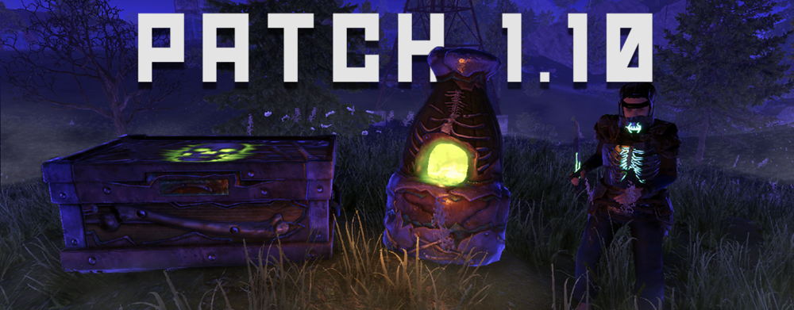
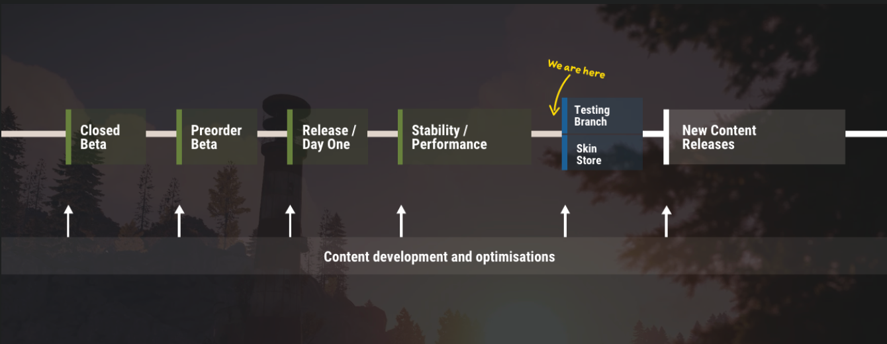

PS4版最新情報
【PS4版】最新アプデ情報
パッチノート1.10が公開

クラッシュの修正
ボイスチャットに関連するクラッシュを修正しました。
RustCoins画面でゲームを再開するときに発生する可能性があったクラッシュを修正しました。
バグの修正
動物とヘリコプターは、セーフゾーンのプレイヤーをターゲットにしなくなります
忍ガレージドアの発光ライトを修正しました。
ゲームのさまざまな小さなバグを修正しました
UI
ロッカーに「お気に入り」オプションが追加されました。クラフトUIのアイテムは、設定されている場合、お気に入りスキンを使用するようになりました（これは現在の岩には影響しませんが、将来のパッチで提供される予定です）
プレイヤーがロード画面でスキンストアをナビゲートできるバグを修正しました
スキンストアを開くときのロード画面のバグを修正しました
オプションのオーディオサブカテゴリでスクロールが機能しない問題を修正しました
オーディオ
ヒットマーカー/ヘッドショットミックスの調整
オーディオオプションメニューにヒットマーカー/ヘッドショットボリュームスライダーを追加しました
オーディオオプションメニューにフットステップボリュームスライダーを追加しました。
プレーヤーが追加の音楽的存在感を望む場合に備えて、ゲーム内の音楽スライダーで追加のボリュームオーバーヘッドを追加しました
ネイルガンの減衰が修正されました
オーディオのマイナーなバグ修正、メモリの最適化、ミックスの調整がたくさんあります
アップデート開発の現状
開発側の声によると、現在はバグの修正とサーバーの用意に時間を使っているため、コンテンツの追加は少し後になるそうです。
ロードマップに黄色の矢印で刺されている部分が今いる場所です。次のアップデートでスキンのストアとテストブランチが追加されます。
テストブランチとは？:テストブランチとは次のアップデートで変化する部分を少し早めに適用するサーバーのことです。簡単にいうとベータサーバーです。そこでは新しい武器やモニュメントを試すことが可能になっています。
技術ツリーアップデートの予定について
まず技術ツリーというものについて説明します。
技術ツリーとは今まで行っていた、[アイテムを入手する]→[リサーチする]という面倒な作業をなくしてよりゲームを簡単にするものです。
ワークベンチとスクラップさえあればどんなアイテムでもリサーチすることができるため、もうロケット発射場でレアアイテムを集めることが必要なくなるのです。
更に詳しい説明はこちらに掲載しています。
そのアップデートが近くに予定されています。
さまざまなサーバーの追加予定
コミュニティサーバーやカスタムサーバーはもちろんのこと、ベータテストの時に人気で合った60人サーバーが近々追加される予定みたいです。
そのほかにもチームメンバーの数を制限するサーバーも用意される予定です。Rustをやっている友達がすくない人でも楽しくプレイできる環境がもうすぐ整いますね。
開発側からのメッセージ
これらのアップデートはいずれ必ず行う予定です。ロードマップ(上の画像)をみてわかるようにアップデートはすぐそこにきてます。そしてロードマップはここで終わりではなくまだまだ先があります。
ただ、今は致命的なバグを修正するのに手が一杯で皆さんの期待にすぐには答えられないです。特にコミュニティーサーバーの開発には二年を要しました。ただし我々開発は皆さんに最高のエキサイティングを与えたいため、頑張って開発を行っています。ですので今しばらくお待ちいただくようお願い申し上げます。
アップデート1.04パッチノート
クラッシュの修正：
- ·ヘッドセットとマイクを抜き差ししても、Xboxプレーヤーがクラッシュすることはなくなりました。
- ·複数のUIクラッシュを修正しました。
- ·ゲームのロード時に発生する複数のクラッシュを修正しました。
- ·火炎放射器で発生する可能性があったクラッシュを修正しました
バグの修正：
- ·LaunchSiteウィンドウのエクスプロイトを修正しました。プレイヤーは、LaunchSiteモニュメントにアクセスするためにそれを使用できなくなります。
- ·プレイヤーがプランターにカボチャとトウモロコシを植えることができない問題を修正しました。
- ·冒とく的なフィルターが、他のプレイヤーを報告するプレイヤーの理由をブロックする際に過度に敏感になるのを修正しました。
- ·プレイヤーがセーフゾーンに近づきすぎてビルドできるバグを修正しました。
- ·一部のプレイヤーが輪ゴムをする原因となる椅子を修正しました。
- ·バンディットキャンプの椅子に座っているときにプレイヤーが見えなくなるグリッチを修正しました
- ·インターネット接続が検出されません。安定したネットワークに再接続して、再試行してください。」を修正しました。エラーメッセージ。
生活の質とパフォーマンスの向上：
- ·ハンマーを装備すると、プレイヤーは作業台を持ち上げることができるようになりました。
- ·植物（カボチャ/トウモロコシ）間の植え付け距離をPCの距離とより一致させるように増やしました。これにより、サーバーラグが減少し、パフォーマンスが向上するはずです。
- ·記念碑の近くの植栽を無効にします。
- ·カボチャとトウモロコシからの種子の数を減らしました。
- ·切断後にXboxゲームパッドが再度取得されない問題を修正しました。
- ·プレイヤーリストが表示されない問題を修正しました。
- ·眠っているプレイヤーは、セーフゾーン内、またはコンパウンドのすぐ外で殺されます。
- ·実績のXboxパーセンテージを修正しました。
- ·Xbox招待システムが正しく機能するように更新されました。
グラフィックとUI：
- ·インベントリを開くと、プレイヤーにプレイヤーモデルが表示されない問題を修正しました。
- ·包帯、大型メッドキット、医療用注射器のアイコンを更新しました。また、それに合わせて包帯の素材を更新しました。
管理人のぼやき: 今回のアップデートは追加要素ではなくバグの修正がメインって感じですね〜